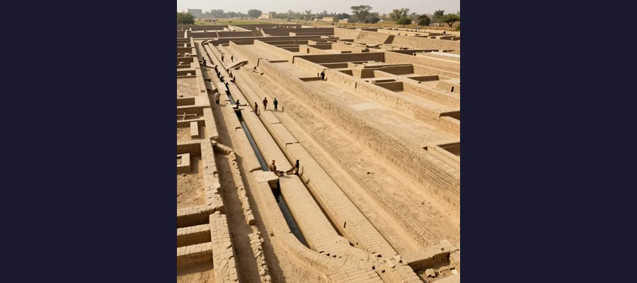
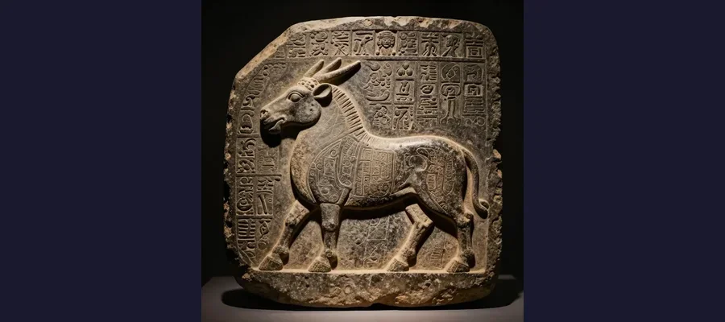

Indus Valley Civilization: Cities Before Their Time!

Mohenjo-daro - a city with running water and flush toilets, built over 4,000 years ago!
Imagine a city with running water, flush toilets, and grid-planned streets. Sounds modern, right? But this city was built over 4,500 years ago - at the same time as ancient Egypt!
This was the Indus Valley Civilization - one of the world's first great civilizations. They built incredible cities, traded with distant lands, and created a writing system we still can't read today.
Overview
Cities Ahead of Their Time
The Indus Valley people built some of the most advanced cities of the ancient world. Their two largest cities were Harappa and Mohenjo-daro (in modern-day Pakistan). Each had around 40,000 people - huge for that time!
What made their cities so special?
- 📐 Grid street layouts - streets crossed at right angles like modern cities
- 💧 Running water - pipes brought water into every house
- 🚽 Flush toilets - yes, really! They had indoor plumbing
- 🕳️ Covered sewers - underground drains carried away waste

Their covered drainage system was more advanced than many European cities had 4,000 years later!
🧱 Engineering Marvels
The Indus people made bricks that were all the same size - standard building materials! They baked their bricks in kilns to make them waterproof. Some of these bricks are still usable today!
A Peaceful Empire?
Here's something strange about the Indus Valley Civilization: archaeologists have found almost no weapons and no evidence of warfare.
Unlike other ancient civilizations that built massive armies and fortifications, the Indus people seem to have lived peacefully for hundreds of years. They had no palaces, no temples, and no royal tombs. Did they create a peaceful, egalitarian society?
Evidence
Historical work on Indus Valley Civilization is strongest when primary records, material traces, and later peer-reviewed analysis point in the same direction. This layered approach helps separate observations from retellings and reduces the risk of repeating popular but unsupported claims.
The Mystery Writing

These symbols have puzzled scientists for over 100 years. Nobody can read them!
The Indus people left behind thousands of seals with mysterious symbols. But here's the problem: nobody can read them!
Despite over 100 years of trying, no one has cracked the Indus script. We don't know what language they spoke. We don't know what their symbols mean. We can't read their history.
🔍 The Rosetta Stone Problem
Scientists cracked Egyptian hieroglyphics using the Rosetta Stone - which had the same text in three languages. But no such "key" exists for Indus script. Without it, their writing remains a mystery!
Competing Explanations
Competing explanations usually persist because each one fits part of the evidence while missing another part. Researchers test these models against chronology, physical constraints, and independent documentation to identify which interpretation requires the fewest assumptions.
How Did It End?
Around 1900 BCE, the Indus Valley Civilization began to decline. Cities were abandoned. Trade stopped. People moved away. But why?
Theories include:
🌧️ Climate Change: A great river may have changed course or dried up, leaving cities without water.
🌊 Flooding: Massive floods might have destroyed crops and buildings repeatedly.
🦠 Disease: Epidemics could have wiped out large populations.
⚔️ Invasion: Some think invaders from the north conquered them - but there's little evidence of battle.
Open Questions
Open questions remain because source quality is uneven across time: some records are direct and detailed, while others are fragmentary or second-hand. Future archival discoveries, improved imaging, and more precise dating methods may refine conclusions without overturning well-supported core findings.
The Mystery Continues
The Indus Valley Civilization was one of humanity's greatest achievements - and one of its biggest mysteries. They built cities that wouldn't be matched in Europe for thousands of years, then vanished without explanation.
Until we decode their writing, the Indus people will keep their secrets!
References & Further Reading
Editorial note: We cross-check claims across multiple independent sources. See our Editorial Policy.